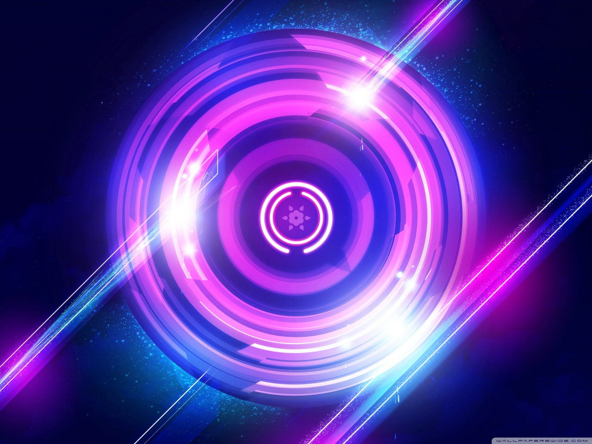
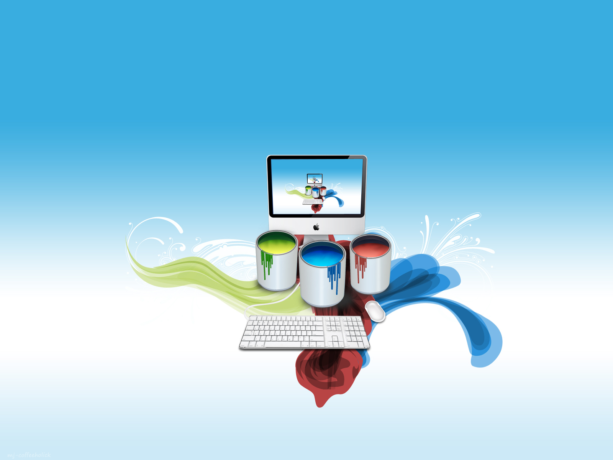

CCA is divided into five cells which work together in collaboration with each other. We believe in the fact that togetherness yields excellent results.
These cells basically function to cover every aspect required for the success of an organisation


CORE CELL
ENTERPRENEURESHIP CELL
WEB,DESIGN & CREATIVE TEAM
ROBO CELL
RD&I CELL
AAROHAN
THE ANNUAL TECHNO-MANAGEMENT FEST
Aarohan means to conquer greater heights. As the annual Techno Management festival of NIT Durgapur, it dares one to elevate his limits and to defy one's capacity. This year, yet again, they celebrate technology with a hope to explore that minuscule thing that always eludes us - perfection. Aarohan hosts a galaxy of events aimed at boosting the technological and managerial skills inherent in today's youth and providing them with an opportunity to showcase their
innovative ideas and thoughts.
Aarohan 2018 is back with the promise of bringing the best in both the worlds of Techno-Management. It aims at bringing out the genius hidden in us that has so long been shielded. Aarohan has witnessed participation as large as 4000 and it promises to grow beyond this. Aarohan is a combined efforts of the
students and the teachers who have been visionaries in the growth of Aarohan.
The college is all set to be a part of this hysterical fever!! So come, join the bandwagon and lets celebrate the joy of innovation. CCA organises an array of events throughout the year in order to inculcate and unleash intuitive ideas and skills aiming particularly towards guiding students to create an environment to
produce a quality of resource pool...
Center for Cognitive Activities
AUDITION 2019
CONTACT US:
National Institute Of Technology, Durgapur
Mahatma Gandhi Road, Durgapur, West Bengal-713209, INDIA